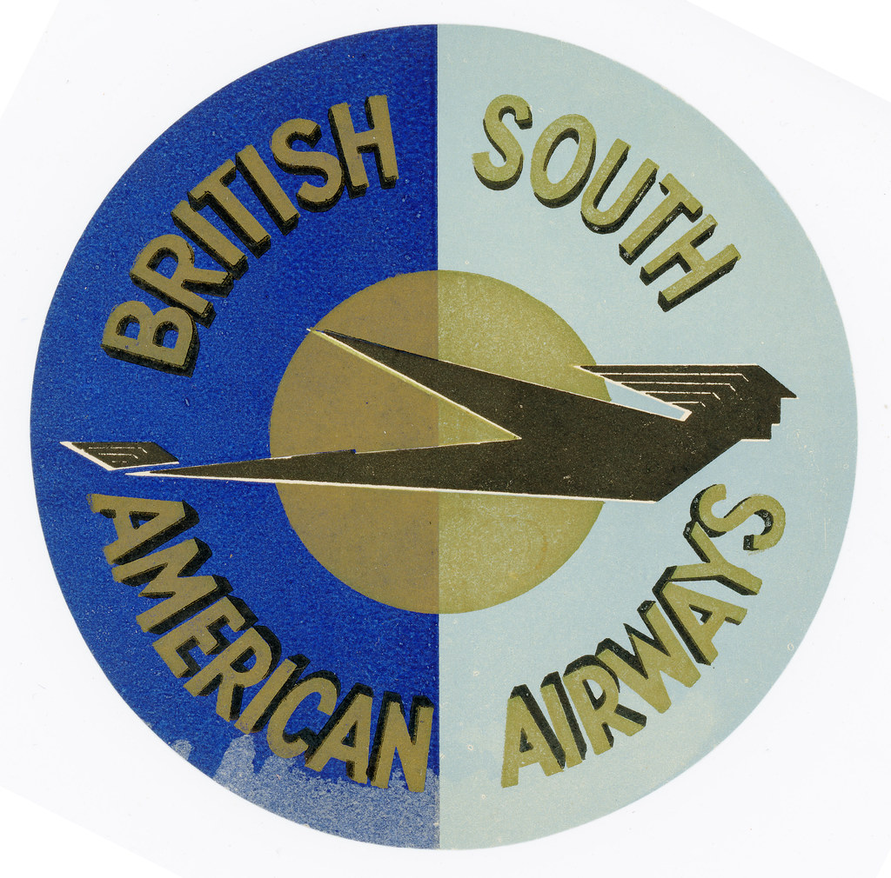
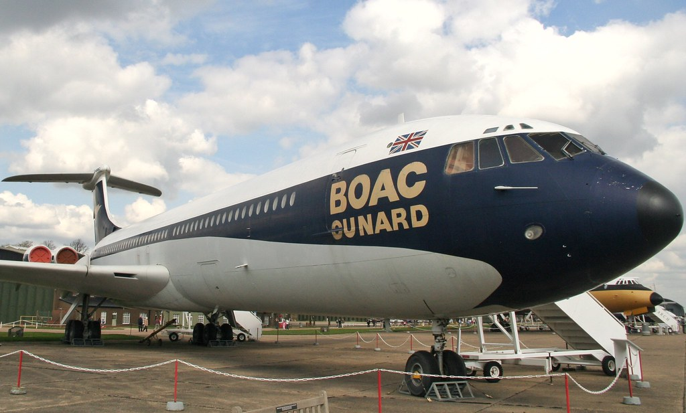

After the War
BEA (British European Airways
Jan 1946- Mar 1974
British European Airways (BEA), formally British European Airways Corporation, was a British airline which existed from 1946 until 1974. BEA operated to Europe, North Africa and the Middle East from airports around the United Kingdom. The airline was also the largest UK domestic operator, serving major British cities, including London, Manchester, Glasgow, Edinburgh and Belfast, as well as areas of the British Isles such as the Highlands and Islands of Scotland, the Channel Islands and the Isle of Man. From 1946 until 1974, BEA operated a network of internal German routes between West Berlin and West Germany as well. Formed as the British European Airways division of British Overseas Airways Corporation (BOAC) on 1 January 1946, BEA became a crown corporation in its own right on 1 August 1946. Operations commenced from Croydon and Northolt airports, with DH89A Dragon Rapides and Douglas DC-3s.
BSAA (British South American Airlines)
Jan 1946- Jan 1950
British South American Airways (BSAA) was a state-run airline in the United Kingdom in the late 1940s responsible for services to the Caribbean and South America. Originally named British Latin American Air Lines it was renamed before services started in 1946. BSAA operated mostly Avro aircraft: Yorks, Lancastrians and Tudors and flew to Bermuda, the West Indies, Mexico and the western coast of South America. After two high-profile aircraft disappearances it was merged into the British Overseas Airways Corporation at the end of 1949
Splitting of BOAC
After the war, in 1946, BOAC was split up to include two more state run airlines, BEA (British European Airways) and BSAA (British South American Airlines). BEA went its own way in parallel with BOAC until the British Airways merger in 1974. BSAA however always struggled operating only the South American routes and was eventually re absorbed into BOAC in 1949. Starting post war operations with a fleet of mainly ex-military aircraft or obsolete flying boats, BOAC was given permission by the government to order a fleet of American built Lockheed Constellations as no suitable British aircraft was available for the Atlantic crossing route. Throughout its existence BOAC was urged by the UK government to buy British despite it often looking to the United States for aircraft. A total of twenty- five Connies would eventually pass through BOAC’s hands.


The 1950s
More US built aircraft followed when an order was placed for seventeen Boeing Stratoliners. These huge double deck aeroplanes turned out to be very expensive to run and BOAC would later become very happy to see them replaced with other aircraft. However due to the Comet problems they didn’t leave the fleet until 1960. It wasn’t just American built aircraft that the corporation operated . British aircraft had also been added to the fleet with Avro Yorks and Handley Page Hermes, also Canadian built Canadair DC-4M Argonauts had joined the fleet to replace the Hermes on some of the African routes. These were Douglas DC-4s built under licence in Canada but with Rolls Royce Merlin engines fitted in place of the usual Pratt and Whitney Twin Wasps. They had arrived in 1949 when a previous order for British built Avro Tudors had been cancelled as the production aircraft failed to meet the original specifications agreed by BOAC. A few Tudors did however enter service with BSAA prior to BOAC taking over the airline. BOAC had placed an order with the Bristol aircraft company for a fleet of Turbo prop Britannias. However due to engine and other delays these would not be available until 1955. BOAC again gained permission to spend money overseas and placed an order for ten Douglas DC-7C aircraft to plug the gap over the Atlantic.
Worlds First Jet Airliner
A new shape joined BOAC and indeed the world in 1952 when the first ever Jet passenger airliner, the de Havilland Comet 1 joined the fleet and started services to Johannesburg and Tokyo. This was all to come to halt in 1954 when following several unexplained Comet crashes the fleet was grounded.
Whilst investigations went on into the Comet crashes, de Havilland spent the time re designing the aeroplane into a larger aircraft with a longer range. With all the lessons learned from the Comet 1 disaster the Comet 4 emerged four years later and was eagerly placed in service with the airline. On the 4th October 1958 it was a Comet 4 that made the first jet passenger carrying flight across the Atlantic. By 1960 the airline had a very diverse fleet including, Britannias, DC-7Cs, Comets, Stratoliners, Argonauts and the first of the Boeing 707s that would eventually replace the Comets.
The last of the York and Hermes aircraft had been retired three years earlier, with the final Constellations going in 1959. Looking for a replacement for the Comets, BOAC in 1956 ordered American Boeing 707s. The government however was pushing a campaign that was “ Buy British”. The aircraft they wanted BOAC to order was the Vickers VC10. BOAC reluctantly entered into negotiations with Vickers demanding a high spec of the aircraft including excellent hot and high performance for the African routes. Vickers then basically designed the aeroplane around the narrow BOAC requirements which did nothing for any potential overseas sales. Happy with what Vickers were offering, in 1958 the airline placed an order for 35 Standard VC10s with options on a further 20. These 20 options were later converted into an order for 10 of the larger Super VC10s. The order was again changed the following year into just 15 standard and 30 Super VC10s. However despite a row in Parliament and the airline being ordered to buy the British jet, eventually only 12 standard and 17 Super versions would be delivered to the airline.
The 1960s
As a nod to the buy British campaign the Boeing 707 came equipped with British built Rolls Royce Conway engines. The first of fifteen 707s on order entered service in 1960 followed four years later by the first of the standard VC10s. In a constant effort to make more use of its fleet, in 1962 BOAC joined forces with the shipping company Cunard to operate charters under the title of BOAC-Cunard. This arrangement remained in place until 1966 when BOAC bought back the Cunard share in the joint venture. In the year 1964/65 BOAC carried one million passengers and at the airlines peak it was serving nearly two hundred destinations. A profit of £7 million was made in 1965 but only after the government had written off losses of £80 million from the previous year.
By 1965 with the departure of both the Comet and Britannia fleets the BOAC route network was served by just two types, the Boeing 707 and the Vickers VC10. Both of these aeroplanes would continue to operate side by side until the formation of British Airways PLC in 1974. In 1966 Boeing produced design details of a new mega plane it was going to build, the Boeing 747 Jumbo Jet. With nothing like it on the drawing board in the UK or anywhere else, BOAC was allowed to place an order for delivery in 1969. By 1968 the airline was doing well carrying 1.5 million passengers with a profit of £21 million pounds. Problems arose however when the first of the Boeing 747s arrived in April 1970 and the pilots refused to fly them unless they were awarded a “wide-bodied” pay rise. The company refused and the aeroplanes remained grounded until a settlement was reached a year later in April 1971. However with the unreliability of the early big fan engines, BOAC recouped some of its losses by leasing out the engines from its unused jets to other airlines.

The 1970s
In July of 1970 Super VC10 G-ASGN was hijacked by Palestinians and flown to Dawson Field, Jordan with several other hijacked airliners and was eventually blown up by the hijackers. This was the first ever hijacking of a British operated airliner. It was not generally known that after Concorde retired the VC10 was the fastest airliner in the world and Super VC-10 G-ASGC held the speed record for the Atlantic crossing by a subsonic airliner for many years it only being surpassed a couple of years ago.
It was left now for the Boeing 707s, their big brother the 747 and the remaining VC10s to take BOAC up to April 1974 and the merger with BEA to form British Airways PLC. An airline who, through BOAC, can this year trace its heritage back 100 years to Air Transport and Travel the first ever British airline who commenced flying in 1919. British Airways was a huge success and when it finally came out of state ownership the shares were snapped up. In its heyday it was known as the world’s favourite airline and successfully operated the Concordes that had earlier been ordered by BOAC.
Supersonic Flight
Production of Concorde had been announced in 1963 but it wasn’t until 1972 that BOAC placed a formal order for seven of the Supersonic airliners, sadly by the time they had entered service BOAC was no more and they took to the skies in the colours of British Airways. There was however a homage to the airline that had ordered them as the registration batch reserved for the planes had been G-BOAA-G-BOAG so there right in the middle was the possible flagship G-BOAC.